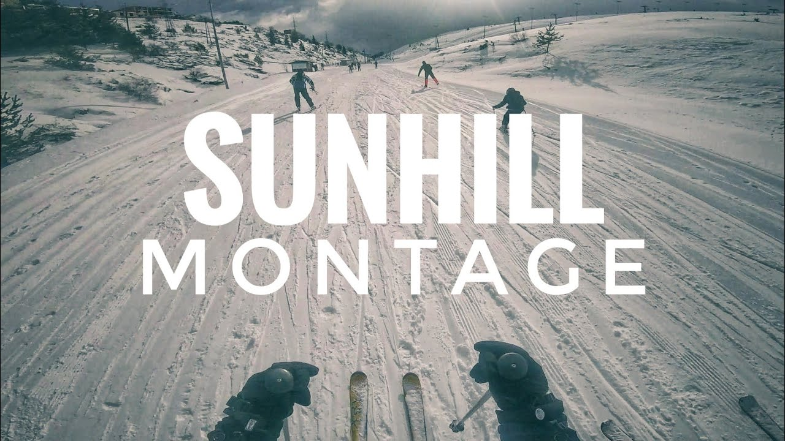

Kodra-diellit
kodra-diellit
Rrethina e Tetovës me bukuritë e saja natyrore me monumentet kulturore-historike, gradualisht afirmohet si qendër turistike atraktive në Maqedoni. Vend kryesor në këtë sferë zë qendra turistike "Kodra e Diellit" me bukuritë e Malit Sharr në kuadër të masivit malor, lartësinë relative, dëborën e zbukurojnë këtë qendër rekreative e sportive tejet të bukur. Qendra "Kodrës e Diellit" shtrihet në lartësinë mbidetare 1780 m, 18 km nga Tetova, 48 km nga Kodra e Diellit deri në Shkup (70 km nga aeroporti i Shkupit). Deri në qendër arrihet përmes udhës së asfaltuar dhe nëpërmjet teleferikut në gjatësi prej 7 km, me të cilin mjet udhëtimi arrihet për 40 min., me një ndryshim lartësie prej 1400 m. Kodra e Diellit disponon me 11 ski-ashensorë, me gjatësi prej 7.7. km., që lidhin shtigjet e skijimit në lartësi prej 1070-2510m. Gjatësia e shtigjeve të skijimit është 20 km nga të cilat 3 janë sipas kritereve të FISit.
Ngjarje Sportive
Shfaqja "Sharplanin Cup" tradicionalisht mbahet në Kodren e Diellit. Mbahet maratona biçikletore malore "Ujrat e Sharit", duke filluar nga Kodra e Diellit dhe duke mbaruar në Bunec në Mavrova.
Hotelet
Ka disa hotele ne Koden e Diellit: Skardus,Teteks,sllavia dhe mbi 200 Wikend-shtepi qe jane ne dispozicion per turistet,me pishina dhe pa pishina
Hotel-Scardus